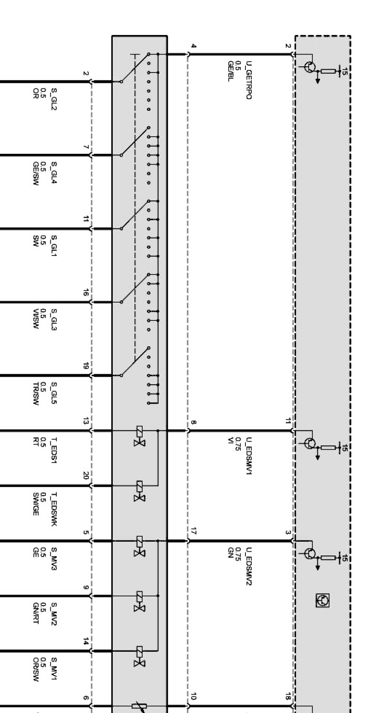
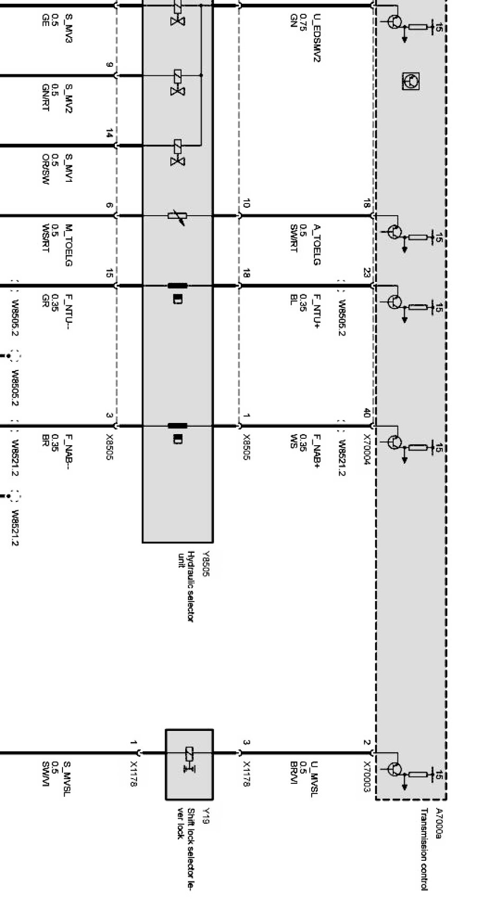
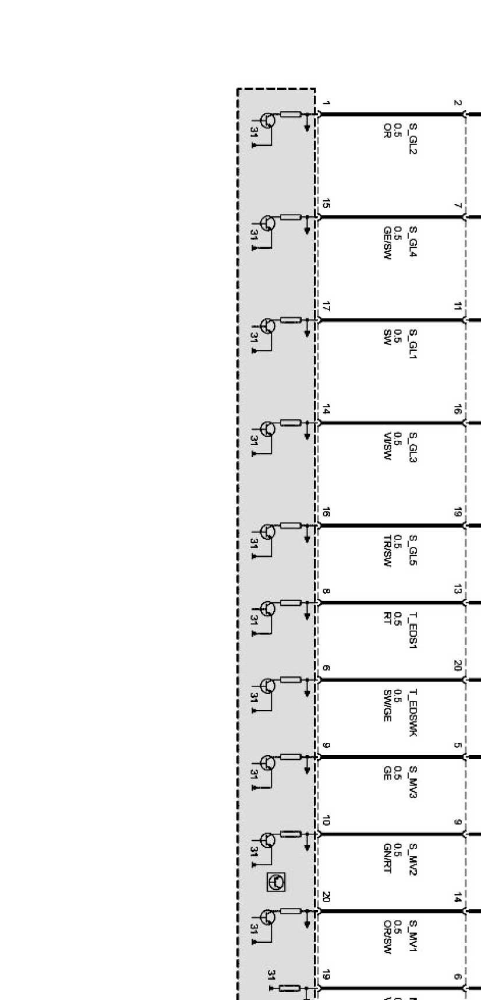
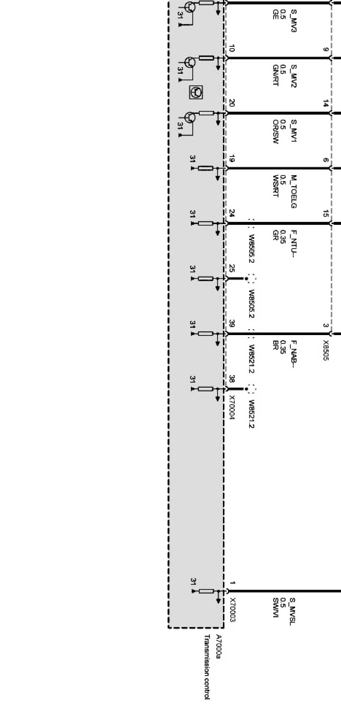

Operation CHARM
: Car repair manuals for everyone.
Home
>>
BMW
>>
2007
>>
X3 3.0si (E83) L6-3.0L (N52K)
>>
Repair and Diagnosis
>>
Diagrams
>>
Electrical Diagrams
>>
Drive
>>
Transmission Control (EGS GM5 Transmission Control)
>>
Torque Converter Turbine Speed
Torque Converter Turbine Speed
Transmission shift device Part 1:

Transmission shift device Part 2:

Transmission shift device Part 3:

Transmission shift device Part 4:
